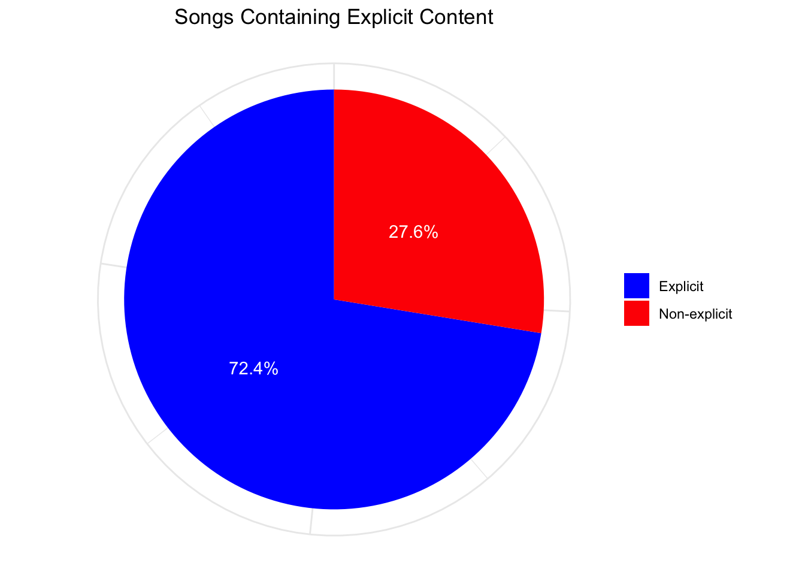
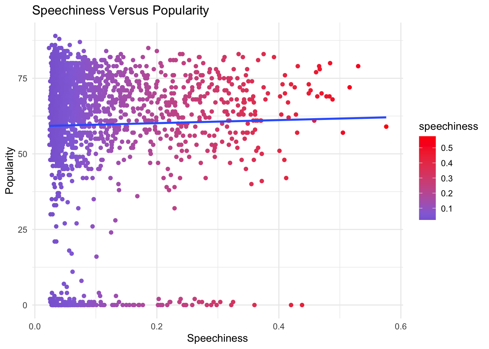
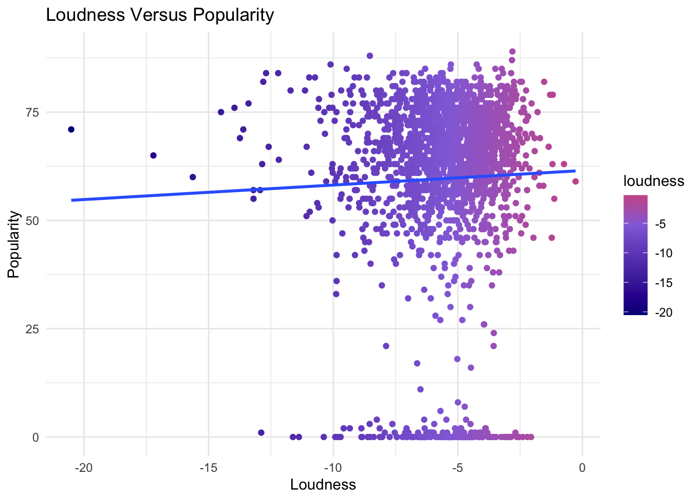

[1] 832Data Story
Data Cleaning
I have cleaned the dataset by removing duplicate and NA values, as well as selecting only the relevant columns required for my data analysis.
The original dataset had songs spanning from year 1998 to year 2020, but was not representative of the top songs from the entire year of 1998 as well as year 2020. This is because the data only considered songs from the end of 1998 and the start of 2020, instead of the whole year. To ensure that there are no sudden abnormalities in data trends, I have narrowed the data to cover only songs between years 1999 to 2019.
You can view both original and cleaned datasets here:
Names and Meanings of Variables in Cleaned Dataset
“artist” refers to the name of the Artist.
“song” refers to the name of the song track.
“explicit” refers to whether the lyrics or content of a song or a music video contain one or more of the criteria which could be considered offensive or unsuitable for children.
“year” refers to the release year of the track.
“popularity” refers to the popularity level of the track. The higher the value the more popular the song is.
“speechiness” refers to the presence of spoken words in a sound track. The greater the presence of speech-like qualities, the closer to 1.0 the attribute value. Values above 0.66 describe tracks that are likely made entirely of spoken words. Values between 0.33 and 0.66 describe tracks that may contain both music and speech, either in sections or layered, including such cases as rap music. Values below 0.33 most likely represent music and other non-speech-like tracks.
“tempo” refers to the overall estimated tempo of a track in beats per minute (BPM). In musical terminology, tempo is the speed or pace of a given piece and derives directly from the average beat duration.
“loudness” refers to the overall loudness of a track in decibels (dB). Loudness values are averaged across the entire track and are useful for comparing relative loudness of tracks. Loudness is the quality of a sound that is the primary psychological correlate of physical strength (amplitude). Values typically range between -60 and 0 db.
“acousticness” refers to the confidence measure from 0.0 to 1.0 of whether the track is acoustic. 1.0 represents high confidence the track is acoustic.
“valence” refers to the musical positiveness conveyed by a track. Tracks with high valence sound more positive (e.g. happy, cheerful, euphoric), while tracks with low valence sound more negative (e.g. sad, depressed, angry). It measures from 0.0 to 1.0.
Data Visualisation
Below, I will be analysing various song properties and their relationships with song popularity.
The main question I wish to answer is “What determines the extent of popularity of songs in Spotify?”
1.0 Overview Statistics
Here is a breakdown of the general statistics for the cleaned dataset.
1.1 Number of songs and artists
Number of artists:
Number of songs:
[1] 19371.2 Songs Per Year
The bar plot below consolidates the number of songs released for each year, between 1999 and 2019. Hover over each respective bar to see the individual values.
Findings:
2012 has the highest number of songs, at 113 songs.
1.3 Songs Per Artist - Top 100 Artists
The interactive bar chart below consolidates data on the number of songs released by artists featured in the dataset of top Spotify tracks, arranged from artists with the highest number of songs featured to lowest.
Adjust the slider to select your preferred number of artists to show in the chart.
Findings:
The artist with the most number of featured songs is Rihanna, with 25 songs.
1.4 Top 25 Songs Based On Popularity
Line graph features the top 25 songs from the dataset, arranged in descending order based on popularity level.
Hover over each point to its individual popularity level out of 100.
Findings:
The most popular song is Sweater Weather, with a popularity rating of 89 out of 100.
2.0 How does the explicit value of a song affect its popularity?
2.1 Songs Containing Explicit Content
This simple pie chart below clearly illustrates the percentage of songs which contain explicit content.

Findings:
27.6%, or the minority of the songs in this dataset, are explicit.
2.2 Songs Containing Explicit Content By Year
The area plot below illustrates the relationship between the year of song published and explicit songs.
Hover over each point to see its individual values.
Findings:
2018 contained the most number of explicit songs, at 49 songs, while 1999 contained the least, at 8 songs.
2.3 How Does Explicit Level of Song Impact Song Popularity? (Categorical Variable)
The box plots below visualises the popularity of songs based on whether they are explicit or not.
Hover over each plot to see its individual values.
Findings:
The median popularity of explicit songs is 67 while that of non-explicit songs is 65. This shows that the explicit value of songs does contribute to its popularity slightly, as seen from the overall higher values found in explicit songs compared to non-explicit songs.
The difference in minimum values between the two plots is 7, but the differences in the maximum values is 1. Notably, the dispersion or inter-quartile range for values for explicit versus non-explicit songs are the same, at 17. This suggests that despite the significant difference in minimum values, it is likely that the non-explicit songs contain songs with low popularity levels that were not present in explicit songs.
Overall, I can conclude that popularity is not significantly affected by whether songs are explicit or not.
3.0 How does different song attributes affect popularity? (Numeric variables)
Firstly, let’s take a look at the distribution of different numeric song attributes using histograms. The attributes that I will be focusing on are Speechiness, Tempo, Loudness, Acousticness and Valence.
3.1 Distribution of Different Song Attributes
Findings:
| song_attribute | overall_shape | observation |
|---|---|---|
| Speechiness | Right-skewed | Most songs have low speechiness of below 0.1. |
| Tempo | Normal | Most songs have moderate tempo between 100 to 150BPM. |
| Loudness | Left-skewed | Most songs have moderate loudness of around -5dB. |
| Acousticness | Right-skewed | Most songs have low acousticness of 0. |
| Valence | Normal | Valence is rather evenly split, with a higher proportion falling between 0.5 to 0.75. |
3.2 Individual Analysis of Impact of Song Attributes on Popularity
3.2.1 Effect of Tempo on Popularity

3.2.2 Effect of Speechiness on Popularity

3.2.3 Effect of Loudness on Popularity
3.2.4 Effect of Acousticness on Popularity

3.2.3 Effect of Valence on Popularity
